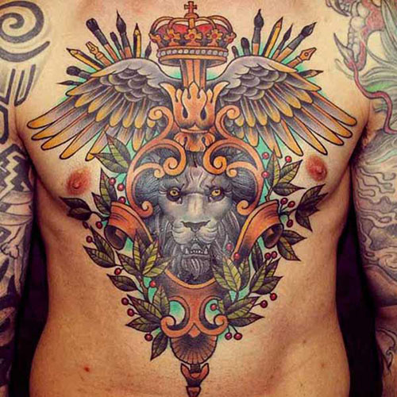

Qu'est ce qu'un tatouage ?
C’est une marque indélébile réalisée en introduisant un pigment sous la peau et ce de manière volontaire.
Le tatouage, plus qu’un discours du corps, est un art corporel, un art de vivre, une philosophie. C’est une inscription de dessins indélébiles sous la peau est une pratique des populations à peau claire ou mate, il est donc moins répandu sur le continent noir africain où il est remplacé par les scarifications. Le mot même de «tatouage», très récent en français, vient du tahitien tatau, qui signifie«dessin». L ’expression est composée de ta, qui veut dire «frapper, faire une incision». C’est James Cook qui transcrit le terme en tattow puis tattoo. De plus, en polynésien, ta signifie «dessin» et atours, «l’esprit ou les esprits».
C’est une marque indélébile réalisée en introduisant un pigment sous la peau et ce de manière volontaire.
Le tatouage est un art qui existe depuis plus de 5000 ans cependant il est difficile de situer le début de cette pratique aussi bien d’un point de vue historique que géographique. Cela est dû au peu d’historiens qui ont étudié l’évolution de cette coutume au fil du temps. Quelques peintures laissent supposer l’existence des tatouages datant de 8000 ans.
La découverte de la momie Ötzi dans les montagnes italo-autrichiennes, âgée de 5300 ans av. J-C confirme les hypothèses concernant l’ancienneté de cette pratique. Les tatouages retrouvés sur Ötzi représentent des lignes et des points situés sur ses articulations et sur les points d’acuponctures. La localisation de ces marques nous fait penser qu’elles eussent un but thérapeuthique.
D’autres momies ont été retrouvées, dont une en Egypte datant de plus 2200 ans av. J-C. Elle présentait des marques semblables à celles d’Ötzi, mais cette fois-ci recouvrant tout son corps dans un but décoratif et religieux. D’autres corps relativement bien conservés ont été découverts dans la vallée de Pazyryk (en Sibérie). Leurs tatouages représentaient des animaux, un motif réservé aux personnes de haut rang comme les chefs ou les nobles.
Selon la tradition, les cultures tribales créent les tatouages à l'aide d'outils aiguisés. Le plus souvent fabriqués avec des os, ces outils sont affûtés en forme de peigne ou de poinçon. Les pointes du peigne sont ensuite trempées dans l'encre, puis le tatoueur vient le frapper avec un petit bâton afin de faire pénétrer les pointes dans la peau et d'y insérer l'encre. Une autre méthode traditionnelle consiste à inciser la peau puis à frotter la coupure avec de l'encre, des cendres, ou d'autres pigments. Cette technique peut être un complément à la scarification. Au Japon, le tatouage traditionnel, aussi appelé Irezumi, se réalise à l'aide d'aiguilles fixées au bout d'un manche, à la manière d'un pinceau. Une fois les aiguilles imprégnées d'encre, le tatoueur les fait pénétrer dans la peau par un mouvement de va-et-vient. De manière générale, ces techniques de tatouage sont très douloureuses car les outils utilisés sont assez grossiers.
De nos jours, la méthode la plus répandue est d'introduire l'encre dans la peau avec un dermographe. C'est un appareil composé de fines aiguilles attachées à une barre au travers d'un canon électrique. Lorsqu'il est enclenché, les pointes se déplacent rapidement de haut en bas et permet l'insertion de l'encre entre le derme et l'épiderme. Il existe plusieurs formes d'aiguilles : on trouve notamment les aiguilles liners, qui sont utilisées pour tracer les lignes et contours d'un tatouage, et les aiguilles magnums, utilisées pour faire le remplissage

le tatouage de style tribal propose un graphisme en lignes épaisses, le plus souvent en noir ou plus rarement en dégradés de gris. Les motifs sont inspirés de symboles rituels primitifs ou représentent plus simplement des motifs abstraits. Ce style de tatouage est souvent réalisé sur l'épaule ou en bracelet autour du bras chez les hommes et dans le bas du dos chez les femmes.
le tatouage celtique est constitué de motifs inspirés de l’art celtique (entrelacs et croix celtiques, créatures mythologiques, etc.). Il est le plus souvent en noir.
le tatouage de style polynésien est caractérisé par des motifs traditionnels issus de la culture polynésienne. Le tatouage est réalisé uniquement à l'encre noire et est composé de lignes courbes ou de représentations stylisées d'animaux (requin, tortue, lézard, etc.).
le style asiatique s'inspire de l'art asiatique et utilise souvent des représentations de dragons, de poissons (plus particulièrement la carpe koï), de Bouddha, ou encore de kanjis. Le style de dessin est très proche des anciens dessins et estampes chinoises et japonaises. Par ailleurs, il faut différencier le style asiatique de l'Irezumi, ce dernier ne concerne que les tatouages de grande taille réalisés de manière traditionnelle.
les motifs old school sont exécutés selon les principes traditionnels occidentaux. Il est réalisé avec des contours épais, de fortes ombres noires et utilise des couleurs primaires vives. Les dessins sont souvent d'inspiration rock 'n' roll et reprennent des thèmes des années 1950 et 60. Des dessins de pin-up, de rose, de tigre, de cartes à jouer, d'hirondelles et de portraits ou encore des symboles militaires ou maritimes sont des exemples très répandus de ce style de tatouage.
le style new school est une version modernisée du style old school. Les motifs sont toujours très colorés mais contiennent plus de dégradés, et sont d'inspiration plus moderne. Les lignes sont larges et marquées, et on y retrouve une inspiration proche de la bande-dessinées, des comics ou du manga.
le style réaliste consiste à exécuter des motifs de la manière la plus réaliste qui soit, les plus réussis donnent même l'impression de voir de véritables photos. Les tatouages réalistes les plus courants sont les portraits.
le tatouage abstrait n'est pas un style à proprement parler, il s'agit de motifs abstraits pouvant être réalisés dans n'importe quels styles. Par exemple de nombreux tatouages tribaux ou polynésiens sont des motifs abstraits.
le graphisme du tatouage est réalisé partiellement ou intégralement à base de points, donnant ainsi des effets de matières inédites en tatouage. Ce style est largement inspiré du pointillisme utilisé dans la peinture impressionniste.
le tatouage de style biomécanique incorpore des composants mécaniques, organiques et biologiques. Il peut être réalisé de manière à donner l'impression que le motif se trouve sous la peau ou la déchire. C'est un style de tatouage largement présent dans la communauté cyberpunk et s'inspire largement de l'univers de la science-fiction.

les motifs de style gothique sont d'inspiration gothique, macabre ou gore, ils sont très souvent réalisés en noir et dégradés de gris. On y retrouve beaucoup de représentations de monstres ou de créatures fantastiques, mais encore des démons, des crânes ou la faucheuse.
Le Water Color est une technique de tatouage réalisé dans un style aquarelle. Des couleurs vives généralement mélangées avec un effet de transparence souvent utilisé pour faire des fonds sur un motif plus réaliste.
le tatouage lettrage consiste à se faire tatouer une phrase, un mot, une lettre. Il est très apprécié et populaire car il peut notamment représenter une citation, une histoire propre à chacun, rendre hommage à un être cher. Il peut être discret ou voyant, et être placé à n'importe quel endroit du corps. De plus, la diversité des polices de caractère est très grande, ce qui en fait un style très riche.

Le tatouage consistant à perforer la peau pour y introduire des agents colorants, chaque petite perforation crée une plaie susceptible de s’infecter et de transmettre une maladie via des bactéries ou des virus.
Il est conseillé de ne pas consommer d'aspirine ou d'alcool durant les 24 heures précédant le tatouage. Ces produits fluidifient le sang et risquent d'augmenter les saignements lors du tatouage, ce qui peut gêner le tatoueur et favoriser des infections. De plus, certains groupes à risque doivent éviter de se tatouer. Notamment les allergiques, les personnes sous traitements médicaux, alcooliques, toxicomanes, femmes enceintes, personnes atteintes d’hémophilie, du sida, d’hépatite B et C, de maladies cardiovasculaires, les personnes avec un stimulateur cardiaque (car il y a un risque d’interférence avec les ondes magnétiques du dermographe) ou touchées par des maladies de peau. Les zones touchées par des verrues, des grains de beauté ou riches en taches de rousseur doivent être évitées.
Outre les indispensables lavages, désinfection des mains et le port de gants, le tatoueur possède des aiguilles steriles qu'il jette après chaque utilisation en plus de nettoyer consciencieusement son matériel à chaque utilisation, désinfecter les outils non stérilisables et le plan de travail.Il est conseillé d'utiliser au maximum du matériel à usage unique (aiguilles, manchon, buses) et de protéger la machine et les câbles dans des protections plastiques jetables. Il doit également analyser la texture de l'épiderme du futur tatoué et la désinfecter minutieusement avant son acte. Le rasage de la zone est nécessaire pour éviter l'introduction de fragments de poils dans la peau.
La peau doit rester propre en permanence et grasse pendant la phase de cicatrisation qui dure environ quinze jours. Il faut rester vigilant en ne laissant aucun agent infectieux être en contact avec la plaie. Le nettoyage doit se faire au moyen d’eau tiède et de savon doux ou d’une solution antiseptique sans alcool. Une fois que la zone tatouée est propre, il faut appliquer une pommade cicatrisante adéquate (certaines peuvent être contre-indiquées pour ce type de plaie). Il existe également une nouvelle méthode, inspirée des soins aux grands brûlés, nommée "cicatrisation en milieu humide" où le tatoueur poseras un pansement respirant spécifique, qu'il faudra changer régulièrement selon les modalité fournies par le fabricant. Il est conseillé de porter des vêtements en coton pendant la durée de la cicatrisation. Les bains, la piscine ou la mer sont à proscrire pendant 2 à 3 semaines, ainsi que le soleil ou les rayons UV pendant au moins un mois.